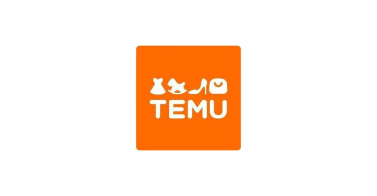
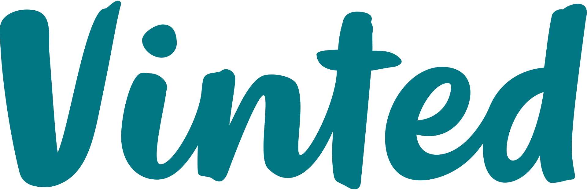

Budget-Friendly Alternatives
Alternative online stores that offer affordable clothing options.
-
Temu

Temu is an e-commerce marketplace that connects consumers with millions of sellers, manufacturers and brands with the mission to empower them to live a better life.
Temu is committed to bringing affordable products onto its platform to enable consumers and sellers to fulfill their dreams in an inclusive environment.
-
Shein
Shein is an online fashion retailer that specializes in affordable and trendy clothing for women, men, and children.
Known for its wide variety of styles, Shein offers everything from casual wear to formal attire, accessories, shoes, and beauty products.
-
ebay

eBay is an online marketplace where users can buy and sell a wide range of products, including affordable clothing.
Known for offering both new and second-hand items, eBay allows shoppers to find budget-friendly options across various styles, brands, and categories.
-
Vinted

Vinted is an online marketplace focused on buying, selling, and swapping second-hand clothing, shoes, and accessories.
It provides a platform for users to find affordable, pre-loved fashion items, making it a popular choice for those looking to save money or shop sustainably.
-
Depop
Depop is a popular online marketplace and social shopping app where users can buy and sell second-hand clothing, accessories, and unique items.
It has become a go-to platform for finding affordable, pre-loved fashion, including trendy streetwear, vintage pieces, and designer items at discounted prices.